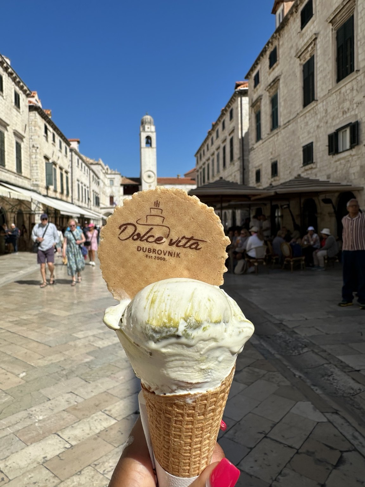

Historic Old Town
Walk through stone streets, public squares, city gates, and centuries-old architecture.
Croatia's Coastal Treasure
The city where my first international solo adventure began.
Plan Your AdventureDubrovnik combines historic streets, clear Adriatic water, scenic overlooks, and a welcoming atmosphere in one unforgettable destination.
Walk through stone streets, public squares, city gates, and centuries-old architecture.
Enjoy beautiful harbors, brilliant blue water, and panoramic views along the coastline.
I felt comfortable exploring the city alone, and the people I met were welcoming and kind.

Some of my favorite memories came from simple moments, such as enjoying gelato while walking through the historic center.
Photo taken by Tyler Glenn in Dubrovnik, Croatia.